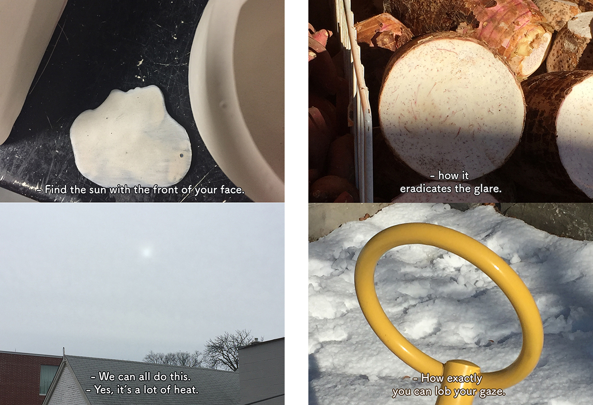
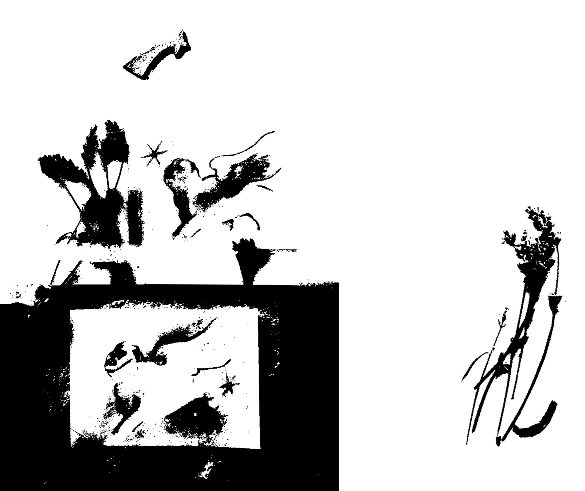
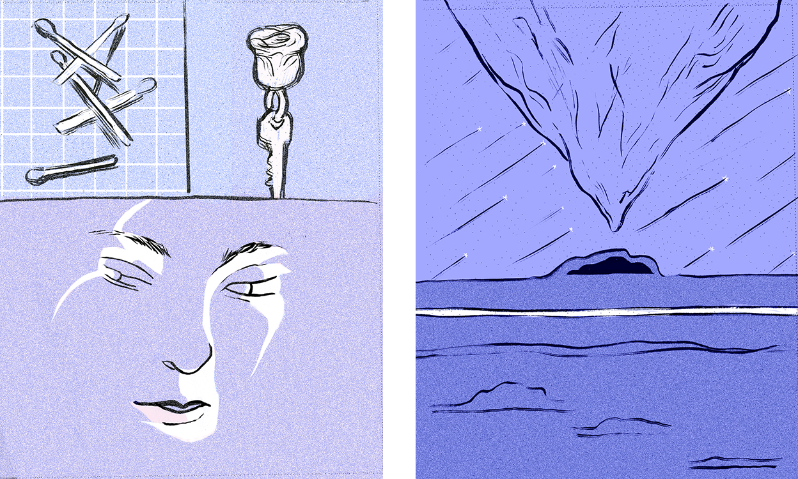

Self Published Work 2015-17
Late Winter Instructions, 10 pages, 2017. View in full here.
An exercise in authority paired with the results of a winter with no sun, dedicated to the snowman on the last page and everyone who shared food with me. https://www.thestar.com/news/gta/2017/01/30/less-than-50-hours-of-sunlight-in-toronto-for-january.html
Comet Comic, 8 pages, 2017. View in full here.
Seasons of the Academic Year, 30 pages, 2015.
Drawings about time passing, seasonal affective disorder, and personal objects.
